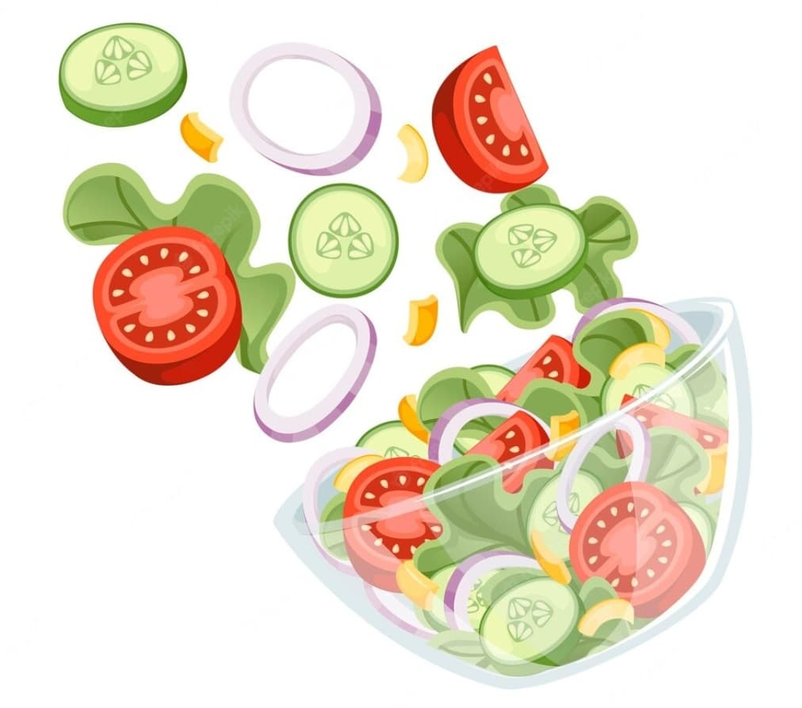

RIQUISIMO CEVICHE VEGANO

Qué te vas a comer...
Una exquisita mezcla de frutas y verduras aderezadas con limón y cilantro.
Ingredientes:
- Un mango.
- Media jicama.
- Un pepino.
- Cilantro picado (limpio y desinfectado).
- Sal al gusto.
- Dos limones.
Instrucciones.
- Lava, pela y corta en cuadritos pequeños el mango, la jicama y el pepino.
- Mezclalos en un bowl junto con el cilantro, los limones y la sal.
- Sirve la mezcla sobre tostadas de maíz o sobre galletas saladas.
Disfruta!